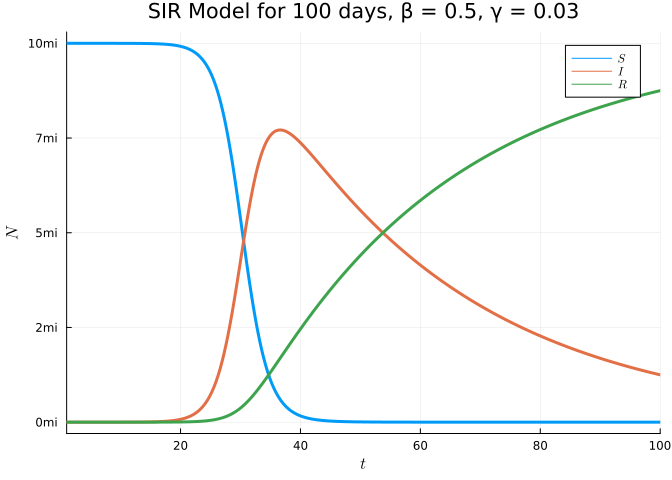
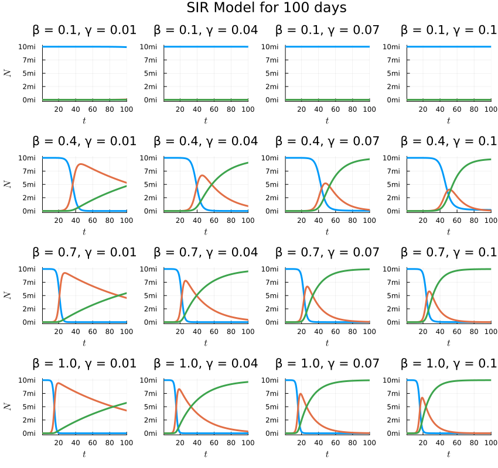
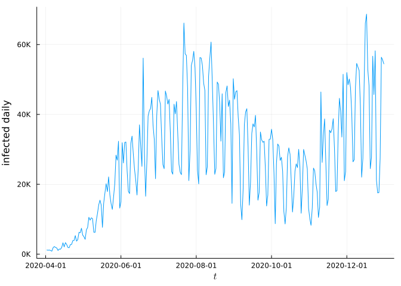

flowchart LR Susceptible -->|susceptible, infected| Infected Infected --> Recovered
November 15, 2022
줄리아는 2011년(?) 공개된 새로운 프로그래밍 언어 입니다. 과학적 계산을 목표로 만들어진 언어로 아직 사용자는 적지만 주목을 받고 있는 언어 입니다.
인터프리터 언어인 파이썬의 느린 속도를 해결하면서도 파이썬 만큼 사용하기 쉬운 언어라고 소개되곤 합니다. 파이썬 만큼 쓰기 편한 것은 모르겠지만, 과학을 하기에는 정말 좋은 언어라고 생각합니다.
감염병에 대한 수치적 모델의 대표적인 모델이 SIR 모델입니다. SIR은 Susceptible, Infected, Recovered의 첫 글자를 모은 것입니다. 당연하다고 생각되는 몇가지 가정을 수식으로 만들었습니다.
이 모델을 아래와 같이 그림으로 그릴 수 있을 것입니다.
flowchart LR Susceptible -->|susceptible, infected| Infected Infected --> Recovered
이 수치를 아래와 같이 수식으로 만들 수 있습니다.
\[ \frac{dS}{dt} = - \beta \frac{S \cdot I}{N} \] \[ \frac{dI}{dt} = \beta S \cdot I - \gamma I \] \[ \frac{dR}{dt} = \gamma I \]
이 수식을 줄리아로 코딩해 봅시다.
줄리아는 Pkg 모듈을 사용해서 아래와 같이 필요한 패키지를 설치할 수 있습니다.
줄리아 패키지 설치가 상당히 많은 시간이 소요될 수 있습니다.
using Pkg
Pkg.add(["Turing", "LazyArrays", "Random", "DifferentialEquations", "Plots", "StatsPlots", "LaTeXStrings", "Downloads", "DataFrames", "CSV", "Chain", "Dates"]) Updating registry at `~/.julia/registries/General.toml`
Resolving package versions... No Changes to `~/.julia/environments/v1.8/Project.toml`
No Changes to `~/.julia/environments/v1.8/Manifest.toml`줄리아는 위의 값을 아래와 같이 정리할 수 있습니다. du, u, p, t를 지정해야 합니다.
여기서 p는 파라미터, t는 시간을 의미합니다.
u는 변수이며 du는 그 1차 미분을 의미합니다. 이것을 바탕으로 위의 수식을 최대한 비슷하게 작성할 수 있습니다.
using DifferentialEquations
function sir_ode!(du, u, p, t)
(S, I, R) = u
(β, γ) = p
N = S + I + R # N은 전체 인원입니다.
infection = β * I * S / N
recovery = γ * I
@inbounds begin
du[1] = -infection # u의 첫번째 아이템의 전미분인 미감염자의 비율입니다.
du[2] = infection - recovery # Infected
du[3] = recovery # Recovered
end
nothing
end;붉은색 선을 보시면 감여자 수가 피크를 그리고나면 점차 줄어드는 것을 볼 수 있습니다.
using Plots, StatsPlots, LaTeXStrings
susceptible = 10_000_000.0
infected = 10.0
recovered = 0.0
u = [susceptible, infected, recovered]
p = [0.5, 0.03]
prob = ODEProblem(sir_ode!, u, (1.0, 100.0), p)
sol_ode = solve(prob)
plot(sol_ode, label=[L"S" L"I" L"R"],
lw=3,
xlabel=L"t",
ylabel=L"N",
yformatter=y -> string(round(Int64, y ÷ 1_000_000)) * "mi",
title="SIR Model for 100 days, β = $(p[1]), γ = $(p[2])")
이 그래프를 여러가지 파라미터를 바꿔가면서 그려 보면 \(\beta\)는 얼마나 빠르게 올라가는지 그리고 피크가 어디에 위치하는지를 결정한다면, \(\gamma\)는 피크의 높이를 결정한다는 걸 볼 수 있습니다.
beta = 0.1:0.3:1.0
gamma = 0.01:0.03:0.1
[(b,g) for b in beta for g in gamma]
function plots(beta, gamma, susceptible, infected, recovered)
u = [susceptible, infected, recovered]
charts = []
for (b, g) in [(b,g) for b in beta for g in gamma]
p = [b, g]
prob = ODEProblem(sir_ode!, u, (1.0, 100.0), p)
sol_ode = solve(prob)
chart = plot(sol_ode,
lw=3,
xlabel=L"t",
yformatter=y -> string(round(Int64, y ÷ 1_000_000)) * "mi",
title="β = $(p[1]), γ = $(p[2])", legend=false)
push!(charts, chart)
end
return charts
end
charts = plots(beta,gamma, susceptible, infected, recovered)
map((chart) -> plot!(chart, ylabel=L"N"), charts[1:4:16])
plot(charts..., layout=(4, 4), size=(850, 800), plot_title="SIR Model for 100 days", label=[L"S" L"I" L"R"],)
using Downloads, DataFrames, CSV, Chain, Dates
url = "https://data.brasil.io/dataset/covid19/caso_full.csv.gz"
file = Downloads.download(url)
df = CSV.File(file) |> DataFrame
br = @chain df begin
filter([:date, :city] => (date, city) -> date < Dates.Date("2021-01-01") && date > Dates.Date("2020-04-01") && ismissing(city), _)
groupby(:date)
combine(
[:estimated_population_2019,
:last_available_confirmed_per_100k_inhabitants,
:last_available_deaths,
:new_confirmed,
:new_deaths] .=> sum .=>
[:estimated_population_2019,
:last_available_confirmed_per_100k_inhabitants,
:last_available_deaths,
:new_confirmed,
:new_deaths]
)
end;5 rows × 6 columns (omitted printing of 3 columns)
| date | estimated_population_2019 | last_available_confirmed_per_100k_inhabitants | |
|---|---|---|---|
| Date | Int64 | Float64 | |
| 1 | 2020-04-02 | 210147125 | 79.6116 |
| 2 | 2020-04-03 | 210147125 | 90.9596 |
| 3 | 2020-04-04 | 210147125 | 103.622 |
| 4 | 2020-04-05 | 210147125 | 115.594 |
| 5 | 2020-04-06 | 210147125 | 125.766 |
5 rows × 6 columns (omitted printing of 3 columns)
| date | estimated_population_2019 | last_available_confirmed_per_100k_inhabitants | |
|---|---|---|---|
| Date | Int64 | Float64 | |
| 1 | 2020-12-27 | 210147125 | 1.22953e5 |
| 2 | 2020-12-28 | 210147125 | 1.23554e5 |
| 3 | 2020-12-29 | 210147125 | 1.24291e5 |
| 4 | 2020-12-30 | 210147125 | 1.25047e5 |
| 5 | 2020-12-31 | 210147125 | 1.25724e5 |
@df br plot(:date,
:new_confirmed,
xlab=L"t", ylab="infected daily",
yformatter=y -> string(round(Int64, y ÷ 1_000)) * "K",
label=false)
NegativeBinomial2 (generic function with 1 method)using Turing
using LazyArrays
using Random: seed!
seed!(123)
@model function bayes_sir(infected, i_, r_, N)
#calculate number of timepoints
l = length(infected)
#priors
β ~ TruncatedNormal(2, 1, 1e-4, 10) # using 10 because numerical issues arose
γ ~ TruncatedNormal(0.4, 0.5, 1e-4, 10) # using 10 because numerical issues arose
phi_ ~ truncated(Exponential(5); lower=0, upper=1e5)
phi = 1.0 / phi_
#ODE Stuff
I = i_
u0 = [N - I, I, r_] # S,I,R
p = [β, γ]
tspan = (1.0, float(l))
prob = ODEProblem(sir_ode!,
u0,
tspan,
p)
sol = solve(prob,
Tsit5(), # similar to Dormand-Prince RK45 in Stan but 20% faster
saveat=1.0)
sol_ = Array(sol)[2, :] # New Infected
sol_ = max.(1e-4, sol_) # numerical issues arose
#likelihood
infected ~ arraydist(LazyArray(@~ NegativeBinomial2.(sol_, phi)))
end;infected = br[:, :new_confirmed]
r_ = first(br[:, :new_deaths])
i_ = first(br[:, :new_confirmed])
N = maximum(br[:, :estimated_population_2019])
model_sir = bayes_sir(infected, i_, r_, N)
chain_sir = sample(model_sir, NUTS(), 1_000)
summarystats(chain_sir[[:β, :γ]])┌ Warning: The current proposal will be rejected due to numerical error(s).
│ isfinite.((θ, r, ℓπ, ℓκ)) = (true, false, false, false)
└ @ AdvancedHMC /home/rstudio/.julia/packages/AdvancedHMC/iWHPQ/src/hamiltonian.jl:47
┌ Warning: The current proposal will be rejected due to numerical error(s).
│ isfinite.((θ, r, ℓπ, ℓκ)) = (true, false, false, false)
└ @ AdvancedHMC /home/rstudio/.julia/packages/AdvancedHMC/iWHPQ/src/hamiltonian.jl:47
┌ Warning: The current proposal will be rejected due to numerical error(s).
│ isfinite.((θ, r, ℓπ, ℓκ)) = (true, false, false, false)
└ @ AdvancedHMC /home/rstudio/.julia/packages/AdvancedHMC/iWHPQ/src/hamiltonian.jl:47
┌ Warning: The current proposal will be rejected due to numerical error(s).
│ isfinite.((θ, r, ℓπ, ℓκ)) = (true, false, false, false)
└ @ AdvancedHMC /home/rstudio/.julia/packages/AdvancedHMC/iWHPQ/src/hamiltonian.jl:47┌ Info: Found initial step size
│ ϵ = 0.000390625
└ @ Turing.Inference /home/rstudio/.julia/packages/Turing/KOb5J/src/inference/hmc.jl:190
Sampling: 3%|█▎ | ETA: 0:00:04Sampling: 10%|████ | ETA: 0:00:11Sampling: 11%|████▍ | ETA: 0:00:11Sampling: 11%|████▋ | ETA: 0:00:12Sampling: 12%|████▊ | ETA: 0:00:16Sampling: 13%|█████▏ | ETA: 0:00:15Sampling: 14%|█████▌ | ETA: 0:00:15Sampling: 14%|█████▊ | ETA: 0:00:15Sampling: 15%|██████▏ | ETA: 0:00:15Sampling: 15%|██████▍ | ETA: 0:00:16Sampling: 18%|███████▌ | ETA: 0:00:14Sampling: 20%|████████ | ETA: 0:00:16Sampling: 20%|████████▎ | ETA: 0:00:16Sampling: 20%|████████▍ | ETA: 0:00:16Sampling: 21%|████████▋ | ETA: 0:00:16Sampling: 21%|████████▊ | ETA: 0:00:17Sampling: 22%|█████████ | ETA: 0:00:17Sampling: 22%|█████████▏ | ETA: 0:00:18Sampling: 23%|█████████▍ | ETA: 0:00:18Sampling: 23%|█████████▌ | ETA: 0:00:19Sampling: 24%|█████████▊ | ETA: 0:00:19Sampling: 24%|█████████▉ | ETA: 0:00:19Sampling: 25%|██████████▏ | ETA: 0:00:19Sampling: 25%|██████████▍ | ETA: 0:00:19Sampling: 26%|██████████▌ | ETA: 0:00:19Sampling: 26%|██████████▊ | ETA: 0:00:19Sampling: 27%|██████████▉ | ETA: 0:00:19Sampling: 27%|███████████▏ | ETA: 0:00:20Sampling: 28%|███████████▎ | ETA: 0:00:19Sampling: 28%|███████████▌ | ETA: 0:00:19Sampling: 28%|███████████▋ | ETA: 0:00:20Sampling: 29%|███████████▉ | ETA: 0:00:20Sampling: 29%|████████████ | ETA: 0:00:20Sampling: 30%|████████████▎ | ETA: 0:00:20Sampling: 30%|████████████▍ | ETA: 0:00:20Sampling: 31%|████████████▋ | ETA: 0:00:21Sampling: 31%|████████████▊ | ETA: 0:00:21Sampling: 32%|█████████████ | ETA: 0:00:21Sampling: 33%|█████████████▍ | ETA: 0:00:21Sampling: 33%|█████████████▋ | ETA: 0:00:22Sampling: 34%|█████████████▊ | ETA: 0:00:22Sampling: 34%|██████████████ | ETA: 0:00:22Sampling: 34%|██████████████▏ | ETA: 0:00:22Sampling: 35%|██████████████▍ | ETA: 0:00:23Sampling: 35%|██████████████▌ | ETA: 0:00:23Sampling: 36%|██████████████▊ | ETA: 0:00:23Sampling: 36%|██████████████▉ | ETA: 0:00:24Sampling: 37%|███████████████▏ | ETA: 0:00:24Sampling: 37%|███████████████▎ | ETA: 0:00:24Sampling: 38%|███████████████▌ | ETA: 0:00:24Sampling: 38%|███████████████▋ | ETA: 0:00:25Sampling: 39%|███████████████▉ | ETA: 0:00:25Sampling: 39%|████████████████▏ | ETA: 0:00:25Sampling: 40%|████████████████▎ | ETA: 0:00:25Sampling: 40%|████████████████▌ | ETA: 0:00:25Sampling: 41%|████████████████▋ | ETA: 0:00:25Sampling: 41%|████████████████▊ | ETA: 0:00:25Sampling: 42%|█████████████████ | ETA: 0:00:25Sampling: 42%|█████████████████▎ | ETA: 0:00:25Sampling: 42%|█████████████████▍ | ETA: 0:00:26Sampling: 43%|█████████████████▋ | ETA: 0:00:25Sampling: 43%|█████████████████▊ | ETA: 0:00:25Sampling: 44%|██████████████████ | ETA: 0:00:25Sampling: 44%|██████████████████▏ | ETA: 0:00:25Sampling: 45%|██████████████████▍ | ETA: 0:00:25Sampling: 45%|██████████████████▌ | ETA: 0:00:25Sampling: 46%|██████████████████▊ | ETA: 0:00:25Sampling: 46%|███████████████████ | ETA: 0:00:25Sampling: 47%|███████████████████▏ | ETA: 0:00:25Sampling: 47%|███████████████████▎ | ETA: 0:00:25Sampling: 48%|███████████████████▌ | ETA: 0:00:25Sampling: 48%|███████████████████▋ | ETA: 0:00:25Sampling: 48%|███████████████████▉ | ETA: 0:00:25Sampling: 49%|████████████████████▏ | ETA: 0:00:25Sampling: 49%|████████████████████▎ | ETA: 0:00:25Sampling: 50%|████████████████████▌ | ETA: 0:00:25Sampling: 50%|████████████████████▋ | ETA: 0:00:25Sampling: 51%|████████████████████▉ | ETA: 0:00:25Sampling: 51%|█████████████████████ | ETA: 0:00:25Sampling: 52%|█████████████████████▎ | ETA: 0:00:24Sampling: 52%|█████████████████████▍ | ETA: 0:00:24Sampling: 53%|█████████████████████▋ | ETA: 0:00:24Sampling: 53%|█████████████████████▊ | ETA: 0:00:24Sampling: 54%|██████████████████████ | ETA: 0:00:24Sampling: 54%|██████████████████████▏ | ETA: 0:00:24Sampling: 55%|██████████████████████▍ | ETA: 0:00:24Sampling: 55%|██████████████████████▌ | ETA: 0:00:24Sampling: 56%|██████████████████████▊ | ETA: 0:00:23Sampling: 56%|███████████████████████ | ETA: 0:00:23Sampling: 56%|███████████████████████▏ | ETA: 0:00:23Sampling: 57%|███████████████████████▍ | ETA: 0:00:23Sampling: 57%|███████████████████████▌ | ETA: 0:00:23Sampling: 58%|███████████████████████▊ | ETA: 0:00:23Sampling: 58%|███████████████████████▉ | ETA: 0:00:23Sampling: 59%|████████████████████████▏ | ETA: 0:00:22Sampling: 59%|████████████████████████▎ | ETA: 0:00:22Sampling: 60%|████████████████████████▌ | ETA: 0:00:22Sampling: 60%|████████████████████████▋ | ETA: 0:00:22Sampling: 61%|████████████████████████▉ | ETA: 0:00:22Sampling: 61%|█████████████████████████ | ETA: 0:00:21Sampling: 62%|█████████████████████████▎ | ETA: 0:00:21Sampling: 62%|█████████████████████████▍ | ETA: 0:00:21Sampling: 62%|█████████████████████████▋ | ETA: 0:00:21Sampling: 63%|█████████████████████████▉ | ETA: 0:00:21Sampling: 63%|██████████████████████████ | ETA: 0:00:20Sampling: 64%|██████████████████████████▎ | ETA: 0:00:20Sampling: 64%|██████████████████████████▍ | ETA: 0:00:20Sampling: 65%|██████████████████████████▋ | ETA: 0:00:20Sampling: 65%|██████████████████████████▊ | ETA: 0:00:20Sampling: 66%|███████████████████████████ | ETA: 0:00:19Sampling: 66%|███████████████████████████▏ | ETA: 0:00:19Sampling: 67%|███████████████████████████▍ | ETA: 0:00:19Sampling: 67%|███████████████████████████▌ | ETA: 0:00:19Sampling: 68%|███████████████████████████▊ | ETA: 0:00:19Sampling: 68%|███████████████████████████▉ | ETA: 0:00:18Sampling: 69%|████████████████████████████▏ | ETA: 0:00:18Sampling: 69%|████████████████████████████▎ | ETA: 0:00:18Sampling: 70%|████████████████████████████▌ | ETA: 0:00:18Sampling: 70%|████████████████████████████▊ | ETA: 0:00:17Sampling: 70%|████████████████████████████▉ | ETA: 0:00:17Sampling: 71%|█████████████████████████████▏ | ETA: 0:00:17Sampling: 71%|█████████████████████████████▎ | ETA: 0:00:17Sampling: 72%|█████████████████████████████▌ | ETA: 0:00:17Sampling: 72%|█████████████████████████████▋ | ETA: 0:00:16Sampling: 73%|█████████████████████████████▉ | ETA: 0:00:16Sampling: 73%|██████████████████████████████ | ETA: 0:00:16Sampling: 74%|██████████████████████████████▎ | ETA: 0:00:16Sampling: 74%|██████████████████████████████▍ | ETA: 0:00:16Sampling: 75%|██████████████████████████████▋ | ETA: 0:00:15Sampling: 75%|██████████████████████████████▊ | ETA: 0:00:15Sampling: 76%|███████████████████████████████ | ETA: 0:00:15Sampling: 76%|███████████████████████████████▏ | ETA: 0:00:15Sampling: 76%|███████████████████████████████▍ | ETA: 0:00:14Sampling: 77%|███████████████████████████████▋ | ETA: 0:00:14Sampling: 77%|███████████████████████████████▊ | ETA: 0:00:14Sampling: 78%|████████████████████████████████ | ETA: 0:00:14Sampling: 78%|████████████████████████████████▏ | ETA: 0:00:13Sampling: 79%|████████████████████████████████▎ | ETA: 0:00:13Sampling: 79%|████████████████████████████████▌ | ETA: 0:00:13Sampling: 80%|████████████████████████████████▊ | ETA: 0:00:13Sampling: 80%|████████████████████████████████▉ | ETA: 0:00:12Sampling: 81%|█████████████████████████████████▏ | ETA: 0:00:12Sampling: 81%|█████████████████████████████████▎ | ETA: 0:00:12Sampling: 82%|█████████████████████████████████▌ | ETA: 0:00:11Sampling: 82%|█████████████████████████████████▋ | ETA: 0:00:11Sampling: 83%|█████████████████████████████████▉ | ETA: 0:00:11Sampling: 83%|██████████████████████████████████ | ETA: 0:00:11Sampling: 84%|██████████████████████████████████▎ | ETA: 0:00:10Sampling: 84%|██████████████████████████████████▌ | ETA: 0:00:10Sampling: 84%|██████████████████████████████████▋ | ETA: 0:00:10Sampling: 85%|██████████████████████████████████▊ | ETA: 0:00:10Sampling: 85%|███████████████████████████████████ | ETA: 0:00:09Sampling: 86%|███████████████████████████████████▏ | ETA: 0:00:09Sampling: 86%|███████████████████████████████████▍ | ETA: 0:00:09Sampling: 87%|███████████████████████████████████▋ | ETA: 0:00:08Sampling: 87%|███████████████████████████████████▊ | ETA: 0:00:08Sampling: 88%|████████████████████████████████████ | ETA: 0:00:08Sampling: 88%|████████████████████████████████████▏ | ETA: 0:00:08Sampling: 89%|████████████████████████████████████▍ | ETA: 0:00:07Sampling: 89%|████████████████████████████████████▌ | ETA: 0:00:07Sampling: 90%|████████████████████████████████████▊ | ETA: 0:00:07Sampling: 90%|████████████████████████████████████▉ | ETA: 0:00:06Sampling: 90%|█████████████████████████████████████▏ | ETA: 0:00:06Sampling: 91%|█████████████████████████████████████▎ | ETA: 0:00:06Sampling: 91%|█████████████████████████████████████▌ | ETA: 0:00:06Sampling: 92%|█████████████████████████████████████▋ | ETA: 0:00:05Sampling: 92%|█████████████████████████████████████▉ | ETA: 0:00:05Sampling: 93%|██████████████████████████████████████ | ETA: 0:00:05Sampling: 93%|██████████████████████████████████████▎ | ETA: 0:00:04Sampling: 94%|██████████████████████████████████████▌ | ETA: 0:00:04Sampling: 94%|██████████████████████████████████████▋ | ETA: 0:00:04Sampling: 95%|██████████████████████████████████████▉ | ETA: 0:00:03Sampling: 95%|███████████████████████████████████████ | ETA: 0:00:03Sampling: 96%|███████████████████████████████████████▎ | ETA: 0:00:03Sampling: 96%|███████████████████████████████████████▍ | ETA: 0:00:03Sampling: 97%|███████████████████████████████████████▋ | ETA: 0:00:02Sampling: 97%|███████████████████████████████████████▊ | ETA: 0:00:02Sampling: 98%|████████████████████████████████████████ | ETA: 0:00:02Sampling: 98%|████████████████████████████████████████▏| ETA: 0:00:01Sampling: 98%|████████████████████████████████████████▍| ETA: 0:00:01Sampling: 99%|████████████████████████████████████████▌| ETA: 0:00:01Sampling: 99%|████████████████████████████████████████▊| ETA: 0:00:00Sampling: 100%|████████████████████████████████████████▉| ETA: 0:00:00Sampling: 100%|█████████████████████████████████████████| Time: 0:01:06Summary Statistics parameters mean std naive_se mcse ess rhat e ⋯ Symbol Float64 Float64 Float64 Float64 Float64 Float64 ⋯ β 1.1196 0.0288 0.0009 0.0013 355.9604 0.9999 ⋯ γ 1.0866 0.0291 0.0009 0.0014 356.0719 1.0000 ⋯ 1 column omitted